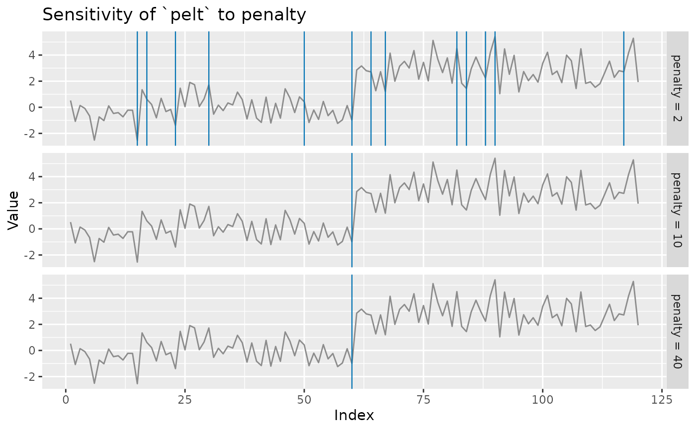

The parameter analogue of cpt_influence(): instead of asking
which observation drives the answer, it asks which setting does.
Runs the detector over a grid of tuning values and reports the detected
locations for each, which is the direct answer to the commonest reviewer
question about a changepoint analysis — "is this robust to the penalty?".
Arguments
- x
A numeric vector (the series), or a
ggcptobject, in which case its series and method are used.- method
Detection method. Taken from
xwhen it is aggcpt.- over
A named list of parameter vectors to sweep. Every combination is run, so keep the grid small:
list(penalty = c(5, 10, 20), minseglen = c(2, 10)).- seed
Optional seed.
- ...
Additional arguments held fixed across the grid and passed to
cpt_detect().- object
A
ggcpt_sensitivityobject (forautoplot()).
Value
A ggcpt_sensitivity object: a list with a grid
tibble (one row per setting: the parameter columns, n_cp, and a
cpts list-column), the data, and the swept parameter
names. Methods: print(), tidy() (one row per detected
changepoint) and autoplot() (a location heatmap over the grid).
Examples
set.seed(2026)
x <- c(rnorm(60), rnorm(60, 3))
s <- cpt_sensitivity(x, method = "pelt",
over = list(penalty = c(2, 10, 40)))
s
#> ggcpt_sensitivity (method: pelt, 3 settings)
#> Swept: penalty
#> Changepoints found: 1 to 24
#>
#> # A tibble: 3 × 2
#> penalty n_cp
#> <dbl> <int>
#> 1 2 24
#> 2 10 1
#> 3 40 1
ggplot2::autoplot(s)
